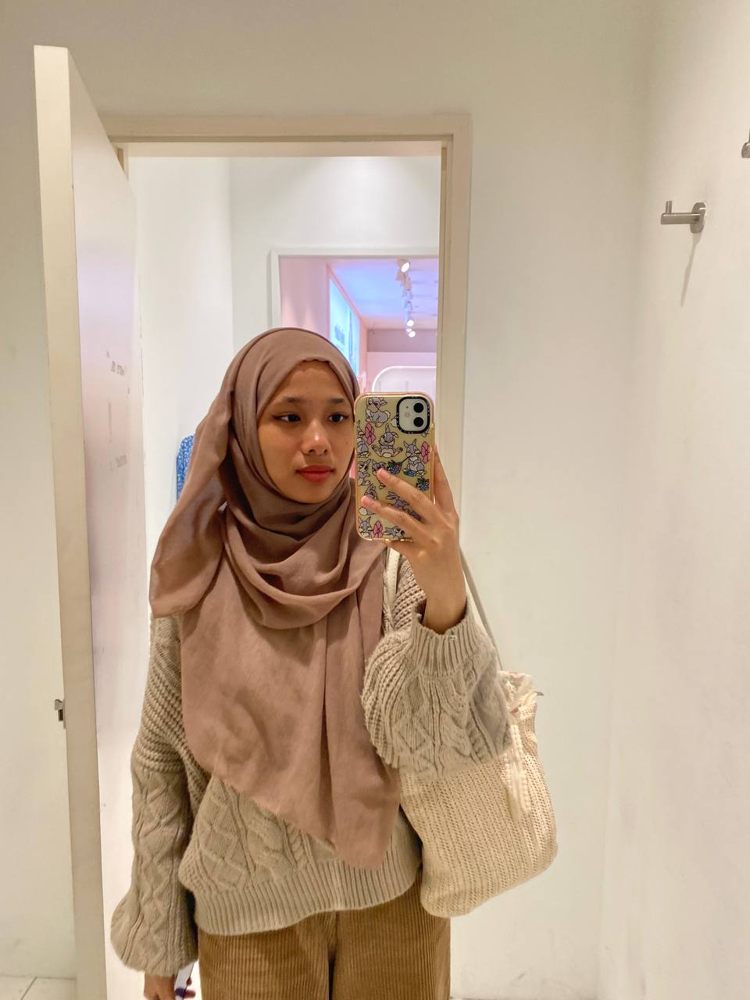
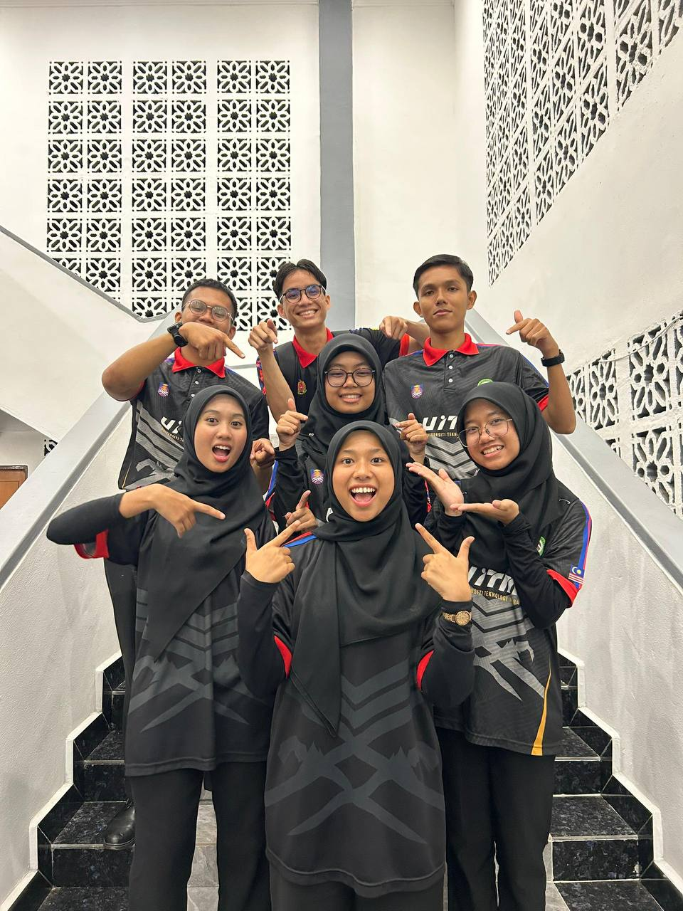
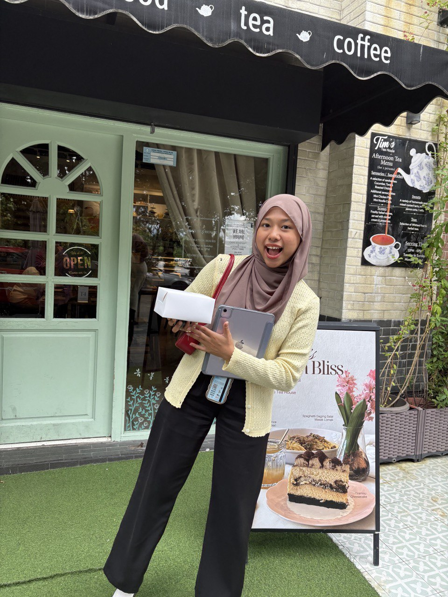
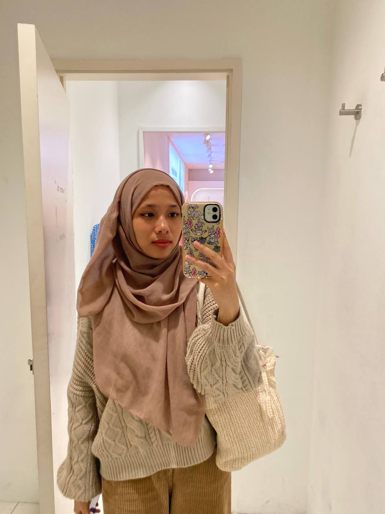
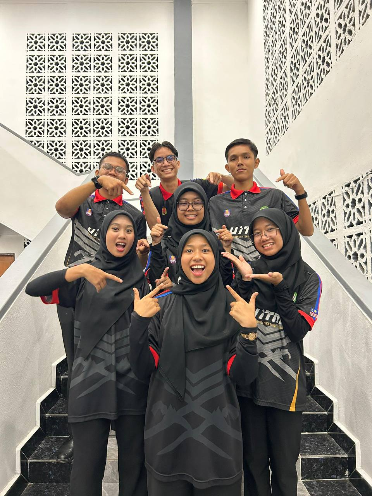
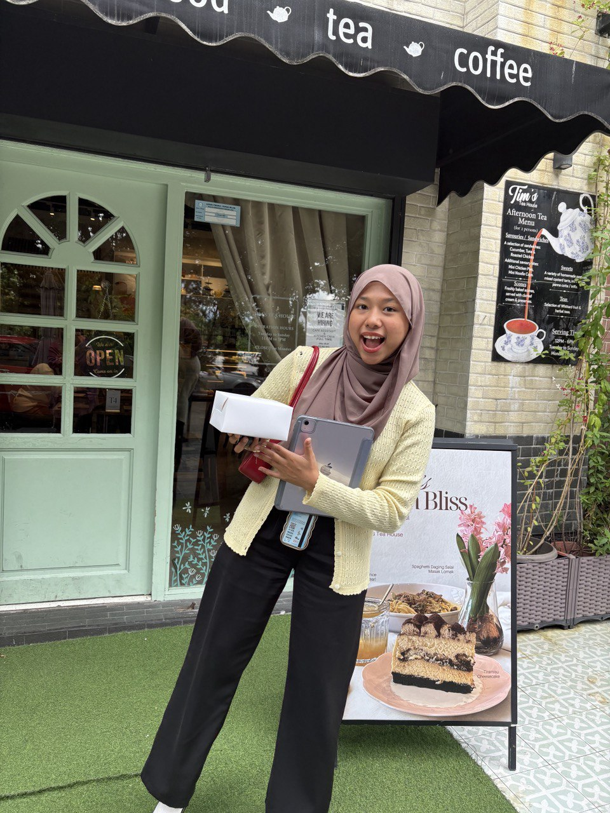

- I began my early years at Tadika Adik Adik, where I discovered the joy of learning and made my very first friends.


| Level Of Education | Duration | Position |
|---|---|---|
| SK Wangsa Jaya (Primary School) | 2017 (1 year) | Class Monitor |
| SMK Wangsa Melawati (High School) | 2018-2022 (5 years) | School Prefect |
| UiTM Segamat | 2024-Present | Komander Kesatria (Head of Entrepreneur Bureau) |
Education is the foundation of our dreams and my journey has been both exciting and rewarding.


Duration: 3 years (during Ramadan)
Developed communication skills, customer service, and confidence when dealing with customers.
Duration: 2 months
Gained hands-on experience in a professional environment and learned how to adapt to workplace responsibilities.
Proof that the best things in life are simple. Just like these pixels, and just like the time I spent with them.
 





Copyright © 2025 Nur Husna Binti Mohd Zulkifi. All Rights Reserved.